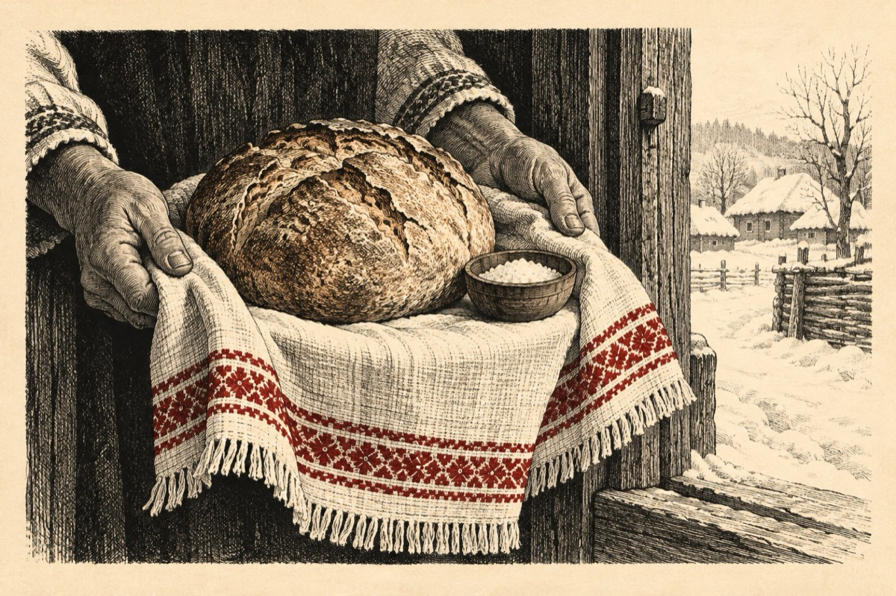

Anul cel nou
Să trăiești copile drag
De un an te tot aștept
Bine ai sosit în prag
Să fii mândru și-nțelept
Te primim cu pâine, sare
Cum e obiceiul nostru
Tu, oaspete de onoare
Să-ți iei în primire postul
Eu am tot îmbătrânit
Puterile mi-au scăzut
Uite am și încărunțit
Și sunt multe de făcut
Până și natura plânge
Și nu știe ce-i cu ea
Mai mult plouâ decât ninge
Poate că se va schimba
Dacă vin zăpezile cum era odată
Iar copiii că sunt jucăuși
Faceți oameni de zăpadă
Și vă dați pe derdeluș!
Cănd se lasă seara-n sat
Luați bice, clopoței și zurgălăi
Și în grupuri mergeți la urat
Urați pe gospodării hăi, hăi, hăi...
Să aibă un an bogat
Știu copii că m-ați dorit
Sunt un an la început
Iată-mă-s aici sosit
Să fim cu toți împreună
Vă spun bine v-am găsit
Pe un cer cu luna plină
Hai ieșiți la joacă și la voie bună
Fii la noi bine primit
Și de toți să fii iubit!
Vasile Groza